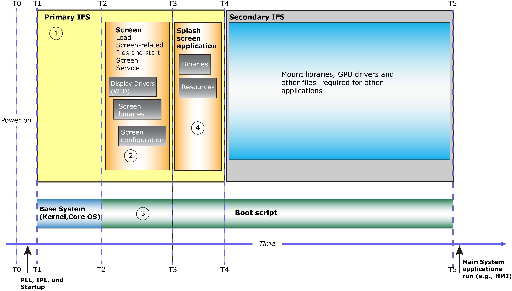
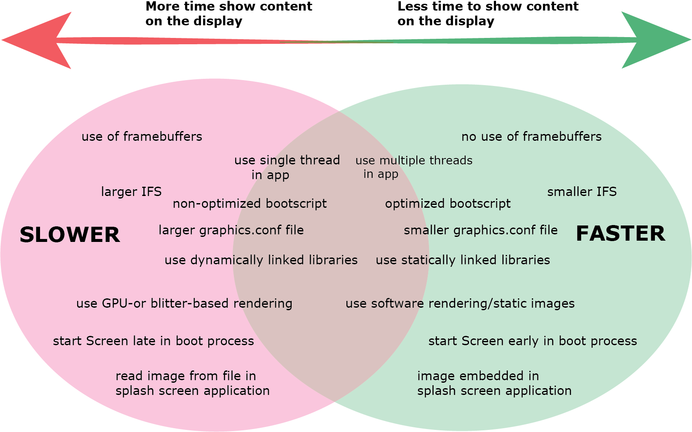

The more time it takes to boot your base system (IPL, kernel, Core OS), the more time that it takes to start Screen.
Therefore, you must consider how to optimize the boot time for your base system.
Generally, after your system boots, a boot script runs to start device drivers, start services, and run
applications. For more details about the system startup sequence, see
About the System Startup Sequence
at the start of this guide.
There are several areas on your system that you can optimize. In general, Screen is optimized to start quickly on a system. It's a good idea to make sure you understand the boot optimization strategy for Screen before you dive in to the specific techniques, so that you avoid making changes that will increase start up time instead of reducing it.
Remember that not all optimization techniques are applicable to all systems. If your system doesn't have a GPU or a display, refer to optimization techniques that aren't associated with using a GPU or displaying content.
It's important to mention that this process of going through the following areas isn't linear, but best done in an iterative manner. For example, you might be able to further optimize your configuration file after you optimize your splash screen application.

Here are the areas where you can look for changes you can make to optimize Screen's startup time. You may wish to review them in the order in which they are presented here, but you do not need to follow this order:
In your boot script (which is generated and configured in the script section of the buildfile that comes with your hardware platform's board support package (BSP)), run the minimal services, and then start Screen.
For systems with displays, you might want to provide a visual cue to indicate that the system is coming up or is in the process of coming up. For example, you might want to show content from a camera while the other components of your system initialize and start. In the boot script, you should start Screen, and then immediately start your splash screen application. You might also need to load any libraries your splash screen application depends on or start device drivers required for your content to show. After the boot script finishes, control is usually passed to a main system application, such as an HMI.
For more information, see Optimize the boot script
in this chapter.
Choose how to render to a displayin this chapter). Much of the time that you can save can directly be attributed to which resources and features your splash screen application demands from Screen. For example:
If you run other applications that use Screen to display content, we recommend that you use the same techniques to optimize all applications as described in the Optimize the Splash Screen Application chapter.
By default, Screen is optimized to start quickly and use as few system resources as possible. Screen loads resources and starts device drivers only when necessary. As a result of this design, the timing for subsequent calls that require the same device driver is shorter than the first call, because the device driver is already running.
There are several ways that you can implement your system to help it start faster. In the following diagram, the green oval on the right lists the important boot optimization techniques that decrease startup time while those listed in the red oval on the left, are the non-recommended techniques (although ones that you might need to use due to system requirements) that typically increase startup time.

If your system has displays and a GPU, it's important that you consider how to implement your splash screen application. Your implementation will often use at least the display driver, but if your splash screen application requires more device drivers to start, it will increase the time required for your content to show on a display. For example, if your splash screen application uses OpenGL ES hardware rendering (not recommended), additional device drivers are started, which increases the time for content to show on the display.
The use of framebuffers or starting Screen late in your system can significantly increase the time it takes to show content on the display. Conversely, not using framebuffers and starting Screen early in the boot process can significantly reduce the time it takes to show content on the display.
The previous diagram also shows how some techniques can have a larger impact than others to decrease or increase the startup time (which also impacts the time to show content on the display). For example, if you start Screen early in the boot process or remove the need to use framebuffers in your application, those techniques are more effective for reducing the time as compared to techniques, such as a reducing the size of the graphics.conf file or using statically linked libraries. If you had to choose a technique to focus on, choose the ones that are suitable for your system and applications, while giving the greatest performance benefits.